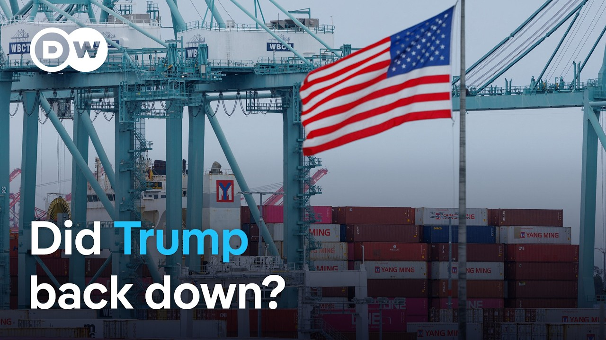

【美中暂停大部分关税：这意味着什么 | DW新闻】
Summary: China and the US agreed to suspend most tariffs for 90 days after trade talks, though differing rates remain, easing tensions in a trade war that threatened the global economy.
摘要： 中美在贸易谈判后同意暂停大部分关税90天，尽管税率仍存在差异，缓解了威胁全球经济的贸易战紧张局势。

⏱️ Estimated Reading Time: 10 min
China and the United States have agreed to drastically reduce tariffs on both sides after a weekend of trade talks in Switzerland.
中国和美国在瑞士进行了一个周末的贸易谈判后，同意大幅削减双方的关税。
US Treasury Secretary Scott Essence says the discussions were robust and that both sides showed great respect while representing their own national interests.
美国财政部长斯科特·埃森斯表示，讨论是激烈的，双方在代表各自国家利益时表现出极大的尊重。
The two countries have now agreed to suspend most tariffs for 90 days.
两国现已同意暂停大部分关税90天。
China says it will retain 10% tariffs on US goods while the US will continue with 30% tariffs.
中国表示将对美国商品保留10%的关税，而美国将继续维持30%的关税。
Beijing and Washington had been locked in a trade war that has threatened to upend the global economy.
北京和华盛顿此前陷入了一场威胁颠覆全球经济的贸易战。
Tremendous pressure.
巨大的压力。
Let's hear more of what Scott Bessant had to say.
让我们听听斯科特·贝桑特还有什么要说的。
The consensus from both delegations this weekend is neither side wants a decoupling.
本周末双方代表团的共识是，任何一方都不希望脱钩。
And what had occurred with these very high tariffs, as Ambassador Greer said, was an embar equivalent of an embargo.
正如格里尔大使所说，这些极高的关税实际上等同于禁运。
And neither side wants that.
双方都不希望这样。
We do want trade.
我们确实希望贸易。
We want more balanced trade.
我们希望更平衡的贸易。
And I think that both sides are committed to achieving that.
我认为双方都致力于实现这一目标。
And DW East Asia correspondent Melissa Chan joins us now from Taipei.
DW东亚记者陈美玲现在从台北加入我们。
Hey Melissa, we just heard some upbeat language there from the US Treasury Secretary.
嘿，美玲，我们刚刚听到美国财政部长的乐观表态。
Uh what's the Chinese side been saying?
呃，中方对此有何说法？
Well, it's definitely big news in China.
嗯，这在中国绝对是重大新闻。
It is the front page headline of the People's Daily, which is the National State Media Paper.
这是《人民日报》的头版头条，该报是国家官方媒体。
Um but I think in the coming days, in the coming hours, it will be interesting to see how uh people online in China respond to this.
呃，但我认为在接下来的几天或几小时内，观察中国网民如何回应会很有趣。
Uh at first glance uh I would say that the interpretation would be that US President Donald Trump blinked.
呃，乍一看，我会说解读可能是美国总统唐纳德·特朗普让步了。
Uh his tariffs were essentially as uh his own uh Treasury Secretary said uh a an embargo and uh needed to be uh wound back.
呃，正如他自己的财政部长所说，他的关税本质上是一种禁运，呃，需要被撤回。
Um and the difficult thing of course is let's not uh forget the fact that there it's just for 90 days.
呃，当然，困难的是我们不要忘记这仅仅是90天的暂停。
We don't know what's going to happen and depending on the ear of who US President Donald Trump is listening to just before the end of those 90 days uh we could be in globally for yet another roller coaster ride.
我们不知道会发生什么，取决于美国总统唐纳德·特朗普在那90天结束前听取谁的意见，呃，全球可能又将经历一轮过山车般的波动。
So from the Chinese perspective again the summary I think is that the Americans have backed down.
因此，从中国的角度来看，我认为总结是美国人让步了。
Um and second of all uh we still don't know regardless of that what's going to happen in 90 days.
呃，其次，尽管如此，我们仍然不知道90天后会发生什么。
Melissa, thank you very much for now.
美玲，非常感谢你。
DW's Melissa Chan there in Taipei.
DW的陈美玲在台北的报道。
And Stephen Beardsley from DW Business is in the studio here with me to break it all down for us.
DW商业频道的斯蒂芬·比尔兹利现在在演播室和我一起为我们分析这一切。
Uh Stephen, a 15 percentage point uh drop in tariffs.
呃，斯蒂芬，关税下降了15个百分点。
That's a huge uh turnaround, isn't it?
这是一个巨大的逆转，对吧？
Yeah, it is, Terry.
是的，特里。
And I think Melissa's right.
我认为美玲是对的。
Um you could definitely come away thinking this is a step back from the US side, especially when we look at the language going in and it stated goals over and over again.
呃，你肯定会认为这是美国方面的退让，尤其是当我们回顾之前的表态和反复强调的目标时。
a 30% effective tariff and if China solves the fentinil issue which is one of the big problems here that's 20 percentage points of that 30% uh then technically that would be a 10% baseline tariff on China at a time in which which this administration has stressed over and over again that it wants to fundamentally restructure the relationship.
30%的实际关税，如果中国解决了芬太尼问题（这是其中一个主要问题），那30%中的20个百分点将被取消，呃，那么技术上中国将面临10%的基准关税，而本届政府一再强调希望从根本上重构这一关系。
So I think we have to look at this and think that this is an effort to really reset these talks based on what has been an unsuccessful introduction so far.
因此，我认为我们必须审视这一点，并认为这是在迄今为止不成功的开局基础上重新设定谈判的努力。
I can't imagine any other assessment of it right now.
目前我无法想象其他评估。
This is really just for 90 days though first of all the suspension right so they're not talking about ending them completely just yet um are where is where does it go from here are there going to be more talks we don't know right we don't know what we do know is that they're saying on the US side there will be further talks and further negotiations and then there's also been talk about a mechanism for communication between the two sides the Chinese side for example has said that I have it here somewhere that there will be rolling consultations on a reg regular and ad hoc basis and it said the working level trade talks could be held as needed.
这实际上只是90天的暂停，首先，他们还没有讨论完全取消关税，呃，接下来会怎样？会有更多谈判吗？我们不知道。我们只知道美方表示将进行进一步的谈判和协商，此外还有关于双方沟通机制的讨论。例如，中方表示——我这里记不清具体位置了——将定期和临时进行滚动磋商，并表示可根据需要举行工作层级的贸易谈判。
To me, that doesn't sound like really a bunch of talks are sort of set out for the next 90 days.
在我看来，这听起来并不像是为接下来的90天安排了一系列谈判。
I could be wrong, but from what we're hearing so far, it sounds like first there's been a reset, an agreement to generally talk more.
我可能是错的，但从我们目前听到的情况来看，首先是重新设定，达成了总体上更多对话的协议。
But we have to walk away wondering what is the goal here.
但我们不得不怀疑这里的真正目标是什么。
Again, if we take the Trump administration at its word that it wants to fundamentally restructure trade with China, that would require much higher tariffs than 10% and and 30% likely as well.
再次，如果我们相信特朗普政府的说法，即它希望从根本上重构与中国的贸易关系，那将需要比10%甚至30%更高的关税。
So you have to wonder what's going to go on with the fentinel issue first of all uh and then what's going to go on.
因此，你不得不首先思考芬太尼问题会如何发展，呃，然后接下来会发生什么。
Are there going to be more purchases required from the Chinese side?
中方是否会被要求增加采购？
Are there going to be formal negotiations in this direction or is there going to be panic at the end of 90 days and a threat of new tariffs?
是否会就此方向进行正式谈判，还是在90天结束时出现恐慌并威胁加征新关税？
We we just don't know.
我们只是不知道。
So still a lot of qu uh many questions here.
因此，这里仍然有很多问题。
Uh what does all this tell us about the balance of power, Steve, between China and the US?
呃，这一切告诉我们中美之间的力量平衡如何，史蒂夫？
I think it reminds us of something that we've already known, Terry, which is that this is a deep relationship and that the prosperity of both economies depends on the other.
我认为这提醒了我们已知的事实，特里，即这是一种深厚的关系，两国经济的繁荣相互依赖。
So extracting one country extracting itself from that is going to be very difficult.
因此，任何一方想要从中抽身都将非常困难。
And when you have a president like Donald Trump who likes to shoot from the hip and doesn't really formulate long-term broad-based strategies, then you're going to have issues really untethering this relationship in a normal way.
当你有一位像唐纳德·特朗普这样的总统，喜欢即兴发挥，并不真正制定长期全面战略时，你就很难以正常方式解开这种关系。
What we saw was a very chaotic way.
我们看到的是非常混乱的方式。
And this appears again to be the administration trying to take a step back from that.
而这似乎又是政府试图从中退后一步。
We've seen the dollar regain strength, which is a good thing.
我们看到美元重拾强势，这是一件好事。
We've seen markets greet this.
我们看到市场对此表示欢迎。
That's what the administration probably wants to see at this point.
这可能是政府目前希望看到的。
But I can't imagine they're happy with the messaging that's going to follow this.
但我无法想象他们对随之而来的舆论感到满意。
And so you have to wonder if there's going to be more turmoil coming in the future because it doesn't seem like Trump is going to meet his goals with this 90-day period.
因此，你不得不怀疑未来是否会有更多动荡，因为特朗普似乎无法在这90天内实现他的目标。
And that means everyone's going to have to brace probably for a bit more turmoil.
这意味着每个人都可能需要为更多的动荡做好准备。
Stephen, thank you very much.
斯蒂芬，非常感谢你。
Stephen Beersley from DW Business.
DW商业频道的斯蒂芬·比尔兹利。